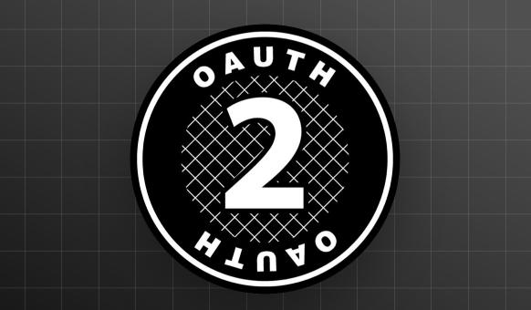
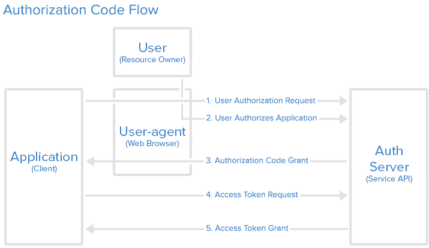

白话OAuth2用户认证及鉴权标准流程原文出处:本文由博客园博主字母哥博客提供。
原文连接:https://www.cnblogs.com/zimug/p/12010476.html

一、OAuth2需求场景
在说明OAuth2需求及使用场景之前，需要先介绍一下OAuth2授权流程中的各种角色：
- 资源拥有者（User） - 指应用的用户
- 认证服务器 （Authorization Server） - 提供登录认证接口的服务器，比如：github等
- 资源服务器 （Resources Server） - 提供资源接口及服务的服务器，通常和认证服务器是同一个应用。
- 第三方客户端（Client） - 第三方应用，希望使用资源服务器提供的资源
- 服务提供商(Provider): 认证服务和资源服务归属于一个机构，该机构就是服务提供商
如果您对这些角色承担的作用还不清晰，也请先记住这些角色，继续往下看：
- 从资源拥有者，即用户的角度：举个例子，用户在B应用上，想使用自己在A应用中的保存的图片等资源。所以用户希望A应用开放接口给B应用，从而使用自己的这些图片资源。
- 从资源提供者的角度：我想让其他厂商的应用都使用我提供的资源，以增强用户对我的的粘性。越多的第三方应用依赖于我开放的接口，就表示会有越多的用户依赖于我。参考：某某平台开放扫码登录接口。
- 从第三方客户端，即资源申请者的角度：A应用是一个大厂开发的，它那里用户量大。A应用既然提供了基于OAuth2的接口，我可以获取一些基本用户数据信息，我干嘛不用呢。特别是扫码登录功能接口，给我自己的用户也带来了极大的方便，增强了我的应用的用户体验。
二、OAuth2授权的流程
OAuth2授权的流程的授权流程还是有点复杂的，用专业的术语很容易把大家弄糊涂，所以我希望给大家举一个生活中的例子，来帮助理解。
背景：我经营着一个考研自习室，向考研学生出租提供自习室资源。李小明是一位考研学生，自习室资源拥有者，我的用户。
- 资源拥有者 - 考研同学李小明
- 资源服务器 - 考研自习室及自习室内的资源（书包）
- 认证服务器 - 我（考研自习室管理员）
- 第三方客户端 - 考研同学李小明家长，第三方申请者
下面我们来结合这张图理解OAuth2授权的流程：

- 第一步（第三方申请资源）：一个自称是考研学生家长的人给我打电话：“李小明是在你这里自习吧？他的书包放在自习室了，我要帮他取一下。”
- 第二步（验证资源拥有者）： 我此时将信将疑，于是让家长等一下，同时拨通了李小明视频，李小明向我确认，的确有这回事。
- 第三步（认证通过发授权码）：我一看这情况，就和小明家长说：李小明的自习室是“XXXX”地址，但是我不在那，你来我这取一下钥匙吧。
- 第四部（申请token令牌）：小明家长来到我的地址，告诉我说：来取“XXXX”地址自习室的钥匙。哦，我一听就明白了。
- 第五步（颁发token令牌）：于是我找出自习室的钥匙交给了小明的家长。
从上面的例子中我们看到，小明(用户)是明显受益方，他不用跑腿了。我作为自习室经营者（认证服务器），对外提供这种服务的目的是为了增加用户粘性，增强用户体验。小明的家长作为第三方，他获取了资源(自习室书包），是为了增强自己的儿子小明的用户体验。
以上的授权模式，就是OAuth2最典型的最常被使用的授权码模式。“XXXX”地址是授权码，钥匙是Access Token。用相对专业的说法再说明一次，大家可以对比学习：
- 第三方应用，向认证服务器请求授权。
- 用户告知认证服务器同意授权（通常是通过用户扫码或输入用户名密码的方式）
- 认证服务器向第三方应用告知授权码（code）
- 第三方应用使用授权码（code）申请Access Token
- 认证服务器验证授权码，颁发Access Token
这样第三方应用就可以使用Access Token，访问服务提供商的接口资源了。（小明家长用钥匙去自习室取书包）
三、OAuth2四种授权模式
- 授权码模式（authorization code）
- 简化模式（implicit）
- 密码模式（resource owner password credentials）
- 客户端模式（client credentials）
在第二节中为大家讲述的是授权码模式。密码模式也很简单：
- 用户将用户名密码交给第三方客户端应用
- 客户端将用户名密码发送给认证服务器，认证服务器验证后颁发AccessToken
- 客户端请求资源接口携带AccessToken，服务端对AccessToken进行校验。
- 校验通过，才能获得接口正确的数据结果响应。
密码模式与授权码模式最大的区别在于：授权码模式申请授权码的过程是用户直接与认证服务器进行交互，然后授权结果由认证服务器告知第三方客户端，也就是不会向第三方客户端暴露服务提供商的用户密码信息。而密码模式，是用户将用户密码信息交给第三方，然后由第三方向服务提供商进行认证和资源请求。绝大多数的服务提供商都会选择使用授权码模式，避免自己的用户密码暴漏给第三方。所以密码模式只适用于服务提供商对第三方厂商高度信任的情况下才能使用。
其他两种模式的应用很少，所以不做过多的介绍。想深入了解的，自行学习！
期待您的关注